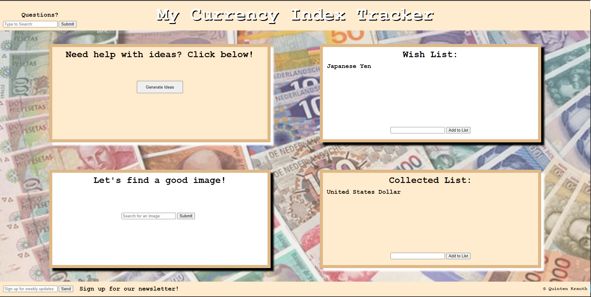

Quinten Krauth
Welcome! My name is Quinten and I am a grounded and motivated college graduate making a career change into SWE. I am thoroughly enjoying my time in DevMountain's Coding Bootcamp and giving it my full-time effort. The strengths I came to realize during my previous area of work has led me to this new stage in my life. Now I have an outlet where I can let my creative ideas flow. Think of me as that reliable friend you know you can always count on to pick up the phone. I have a healthy obsession with making things and an even healthier obsession with making things better. I love creating relationships with new people and I feel wherever I go I can make a big impact. Interested? Why not stay and look around.
emailquintenkrauth19@gmail.com
placeIndianapolis, IN
Projects:
Currency Keeping Web Application
A concise list keeping web application built using HTML, CSS, JavaScript, Express, and Axios.
Video LinkEducation:
DevMountain Student Developers Programs (July 2022 - Current)
I am currently enrolled in the DevMountain bootcamp where the amount of content I am learning every day I could go on forever about. I am finding myself finally picking up on overarching coding principles and concepts. I am especially appreciative of the high level projects we get to work on and the mentors that are there for us.
Coding Basics v.1 Certification (July 2022 - Aug 2022)
FreeCodeCamp / Independent Learning (May 2022 - Current)
With JavaScript being one of my primary focuses, the curriculum I am directly working on includes Basic Data Structures, Algorith Scripting, Functional Programming, and Debugging.
Indiana University - Bachelor of Science in Public Affairs (2016 - 2020)
Major: Business Management
Minor: Community / Urban Development
During my time at Indiana University I learned that I can thrive in a learning environment. Failure is part of the process, Take ownership and develop a growth mindset and embrace change. I have also improved on my ability to plan and set meaningful goals.
Technical Skills:
- HTML/CSS
- JavaScript
- React
- Node
- SQL
- APIs
- Express
- QA Testing
- OOP
- Data Structures
- Bash/Shell
- Git
Interpersonal Skills:
- Inclusion
- Collaboration
- Listening
- Brainstorming
- Detail Oriented
- Time Management
- Clear Communication
- Encouraging
- Patience
- Eagerness to Learn